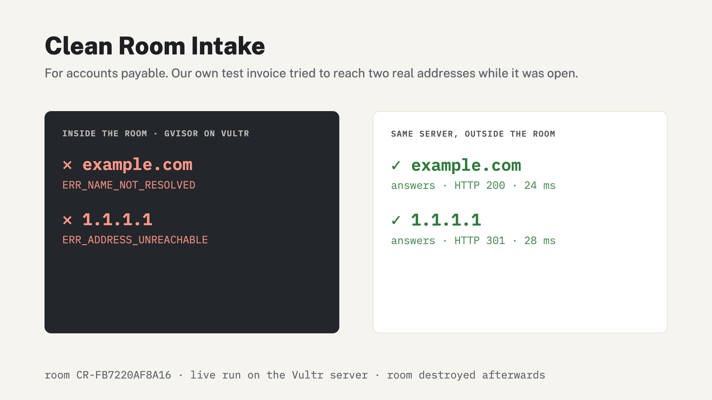
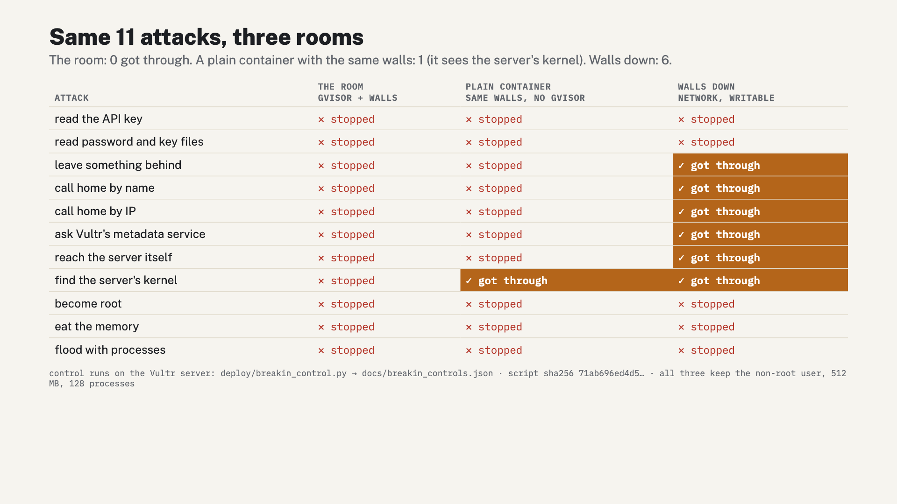

reported lost to business email compromise in the US in 2025.
Accounts payable at a 40-person HVAC company in Salt Lake City. PDFs, phone scans, Word files, forwarded emails.
Today: open them and hope, or retype from a preview and lose an hour.
Every file is opened in a throwaway room on Vultr. Only the text comes back. The room is destroyed. A receipt stays.
| 1 · write | Vultr Serverless Inference writes the extraction step for this kind of file |
| 2 · run | a fresh gVisor container on the Vultr VM runs it: no network, no secrets, read-only, capped |
| 3 · retry | error inside the room → back to the model, up to 2 more tries |
| 4 · read | the fields are read from the text, marked as untrusted data |
| 5 · check | every reported field against the room's text; vendor history: bank, pay method, address, sender domain |
| 6 · destroy | container removed; receipt kept |
| Kernel | gVisor runsc · dmesg: "Starting gVisor..." |
| Network | none · name resolution fails |
| Secrets | none passed in · the step sees only HOME, LANG, PATH |
| Filesystem | read-only, 64 MB tmpfs · write to / refused |
| Memory · pids · time | 512 MB: 1 GB killed (137) · 128: stopped at 50 · 30 s, then rm -f |
| Privileges | no capabilities · uid 65534 |
| Leftovers | 0 containers after all runs |

Inside the room both failed (Chromium's own net log); from the same server, outside the room, both answer. The file is held for a person.

HOLD · New bank account (Canyon State ****2208 → Summit Ridge ****9013), sent from granitepeak-refrig.example.net.
Payment waits until the controller approves, and a hold about who gets the money can't be approved without a written note of the call-back.
Also held: a new pay method (check instead of ACH, Zelle, crypto), a new pay-to address, a first-time vendor, a file that tried anything while open.
| Who pays | accounts payable teams; $15 per seat a month (a 20-person team: $300) |
| Why not the AP suite | AP suites and vendor-verification tools check the bank number; nobody opens the stranger's file safely and shows what it tried. We do both, in one step. |
| Replaces | "open and hope", manual retyping, after-the-fact fraud recovery |
| Next | mailbox connector · vendor history from QuickBooks / NetSuite · one VM per customer |
| On Vultr | Cloud Compute VM · Docker + gVisor · Serverless Inference (mimo-v2.6-flash) |